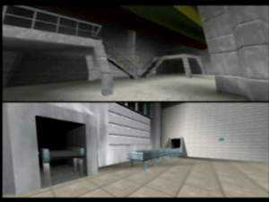
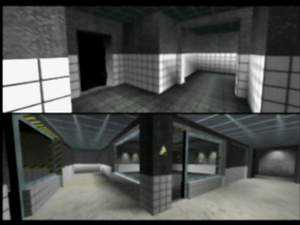
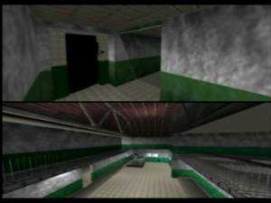
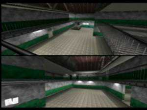
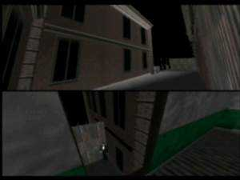
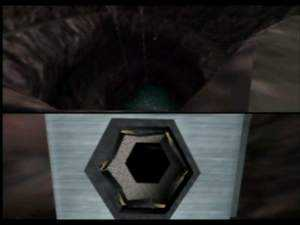
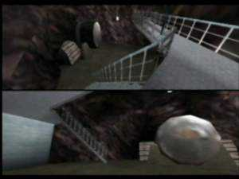

Ceci concerne Facility, Archives et Caverns. Vous aurez remarqué que l'on ne peut pas accéder à la totalité du Niveau, because Porte Fermée. Eh ben ces Codes vous permettent d'accéder à TOUT le Niveau. Evidemment, il n'y a rien dans l'autre partie, ni Boites ni Armes, car le Jeu n'est pas programmé pour que vous y alliez. Normal. Il n'y a pas non plus de Porte, ni de trucs genre Ordinateurs, Vitres etc.
Marche à Suivre - Important - Pour défoncer la Porte afin de passer au travers, il faut que le premier Joueur se place devant, avec le Gun visant la Porte. Ensuite, vous appuyez plusieurs fois sur le Bouton de l'Action Replay, et la Porte va exploser toute seule. Elle va être toute noire, et on pourra passer au travers !!






Facility 880AFB1C 0001 Archives 880AD31C 0001 Caverns 880B4B1C 0001












